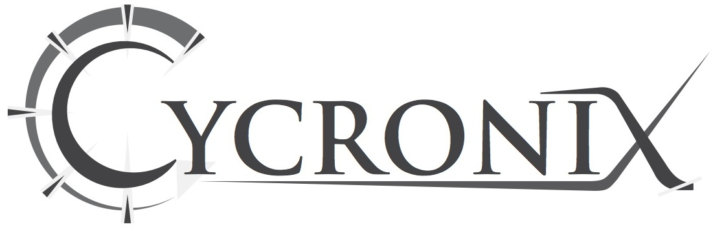

Consulting Services:
Enterprise Network Design
Data Distribution for Test & Measurement
Cloud Computing for Real Time Applications
Proposal Generation and/or Project Team Partner
Hourly or Fixed Price Contracts
DataTurbine Support:
Installation
Data Client Interfaces
Custom Software Apps
Trouble Shooting
One-Shot How-To Support
Annual Support (Bronze, Silver, Platinum)
Hourly Custom Consulting
New Technologies:
CloudTurbine – Real Time Streaming via Cloud File Sharing
PixFilm – View Dropbox photos as time-synced filmstrips, convert to video
About Cycronix
Cycronix is a sole-proprietorship of Matthew Miller, original inventor and Principal Investigator for DataTurbine. Mr. Miller has over 3 decades of experience providing data acquisition and network architecture consulting for science, research and development groups in aerospace and government. Cycronix leverages partnerships with fellow experts to form leading-edge teams for larger projects.
Contact
Email inquiries at: info@cycronix.com